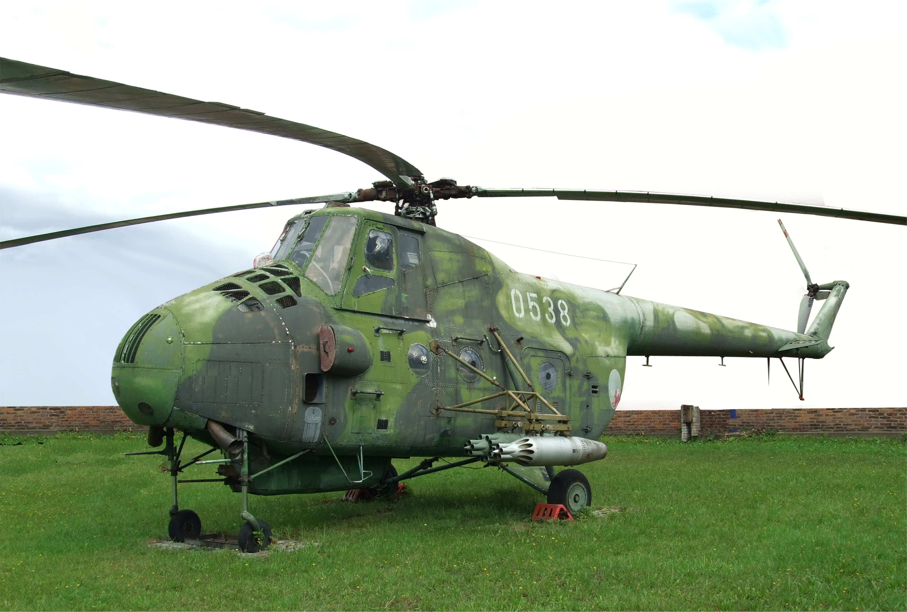

Service History
- Entry into service :
The Mi-4 entered service with the IAF in the 1960s, when India sought a versatile helicopter to
support logistics, troop transport, and supply missions in challenging terrains.
- Major Operations :
The Mi-4 saw extensive use during the 1962 Sino-Indian War, 1965 Indo-Pak War, and 1971 Indo-Pak War.
Its ability to operate in mountainous regions made it essential for transporting troops, evacuating casualties, and delivering supplies to forward areas.
- Retirement : The Mi-4 was gradually phased out by the 1980s, as newer models like the Mi-8 and later the Mi-17 replaced it.
Nevertheless, the Mi-4 served the IAF for over two decades and was instrumental in India’s early rotary-wing airlift capabilities.
Technical Specifications
- Weight : Approximately 5.5 tons (empty weight).
- Engine : Powered by a single Shvetsov ASh-82V radial engine, producing around 1,700 horsepower.
- Speed : Capable of speeds up to 185 km/h (115 mph).
- Armament :
Could be equipped with machine guns and rocket pods in certain configurations for support roles.
- Capacity: Capable of carrying around 1.5 tons of cargo, or up to 14 troops, or 8 stretchers for medical evacuations.
- Notable Feature : The Mi-4’s robust design allowed it to operate in high-altitude and rough terrain, making it suitable for India's varied environments.
- Range : Operational range of around 500 km.
- Crew : Operated by a crew of two (pilot and co-pilot) along with a flight engineer.
Historical Significance
The Mil Mi-4 was a crucial addition to the IAF’s fleet, enabling India to perform
rapid-response operations in mountainous and inaccessible regions. It marked a significant
upgrade in India’s ability to perform airlift and logistics operations, particularly during
the 1962 conflict with China. The Mi-4’s contribution laid the foundation for India’s modern rotary-wing airlift capability and established
the importance of helicopters in India’s military strategy.
Notable Missions
- 1962 Sino-Indian War: The Mi-4 was heavily used for transporting troops, supplies, and ammunition to the high-altitude areas of Ladakh and Arunachal Pradesh. Its ability to operate
from rough, makeshift helipads provided essential support to Indian forces in difficult terrain.
- 1971 Indo-Pak War: The Mi-4 conducted crucial airlift and casualty evacuation missions, particularly in the eastern theater. Its role in supplying forward areas and evacuating wounded personnel was vital in sustaining Indian forces.
- Humanitarian Missions: The Mi-4 was used in various disaster relief operations across India, often delivering aid to remote villages affected by natural disasters. Its ruggedness and capacity for carrying cargo and personnel made it well-suited for humanitarian roles.